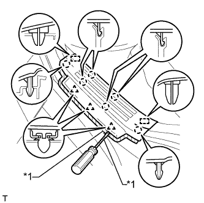

ROOF HEADLINING > REMOVAL |
| 1. DISCONNECT CABLE FROM NEGATIVE BATTERY TERMINAL |
| Condition | Waiting Time |
| Vehicle enrolled in G-BOOK system | 6 minutes |
| Vehicle not enrolled in G-BOOK system | 1 minute |
| 2. REMOVE REAR NO. 2 SEAT ASSEMBLY |
Remove the rear No. 2 seat assembly (Click here).
| 3. REMOVE REAR NO. 1 SEAT ASSEMBLY |
for 60/40 Split Slide Walk-in Seat Type LH Side:
Remove the rear No. 1 seat assembly (Click here).
for 60/40 Split Slide Walk-in Seat Type RH Side:
Remove the rear No. 1 seat assembly (Click here).
| 4. REMOVE DOOR SCUFF PLATE ASSEMBLY LH |
 |
Put protective tape around the door scuff plate.
| *1 | Protective Tape |
Using a screwdriver, detach the 4 clips, 10 claws and 2 guides.
Disconnect the connector and remove the door scuff plate.
| 5. REMOVE DOOR SCUFF PLATE ASSEMBLY RH |
| 6. REMOVE COWL SIDE TRIM BOARD LH |
 |
Remove the clip.
Detach the clip and claw and remove the cowl side trim board.
| 7. REMOVE COWL SIDE TRIM BOARD RH |
| 8. REMOVE FRONT DOOR OPENING TRIM WEATHERSTRIP LH |
 |
Remove the front door opening trim weatherstrip.
| 9. REMOVE FRONT DOOR OPENING TRIM WEATHERSTRIP RH |
| 10. REMOVE FRONT NO. 1 ASSIST GRIP PLUG LH |
 |
Using a screwdriver, detach the 2 claws and remove the front No. 1 assist grip plug.
| *1 | Protective Tape |
| 11. REMOVE FRONT NO. 1 ASSIST GRIP PLUG RH |
| 12. REMOVE NO. 1 ASSIST GRIP |
 |
Remove the 2 bolts.
Detach the 2 claws and remove the No. 1 assist grip.
| 13. REMOVE FRONT PILLAR GARNISH LH |
 |
Detach the 3 guides and remove the front pillar garnish.
 |
Protect the curtain shield airbag assembly.
Completely cover the airbag with a cloth or nylon sheet and secure the ends of the cover with adhesive tape as shown in the illustration.
| *1 | Curtain Shield Airbag Assembly |
| *2 | Adhesive Tape |
| *3 | Protective Cover |
| 14. REMOVE FRONT PILLAR GARNISH RH |
| 15. REMOVE REAR NO. 1 FLOOR STEP COVER |
 |
Using a screwdriver, detach the 2 claws and remove the rear No. 1 floor step cover.
| *1 | Protective Tape |
| 16. REMOVE QUARTER SCUFF PLATE LH |
 |
Remove the 2 bolts and quarter scuff plate.
| 17. REMOVE QUARTER SCUFF PLATE RH |
| 18. REMOVE REAR DOOR SCUFF PLATE LH |
|  |
Put protective tape around the rear door scuff plate.
Using a screwdriver, detach the 3 clips, 6 claws and 2 guides and remove the rear door scuff plate.
| *1 | Protective Tape |
| 19. REMOVE REAR DOOR SCUFF PLATE RH |
| 20. REMOVE REAR DOOR OPENING TRIM WEATHERSTRIP LH |
 |
Remove the rear door opening trim weatherstrip.
| 21. REMOVE REAR DOOR OPENING TRIM WEATHERSTRIP RH |
| 22. REMOVE OUTER LAP BELT ANCHOR COVER |
 |
Detach the 3 claws and remove the outer lap belt anchor cover.
| 23. REMOVE LOWER CENTER PILLAR GARNISH LH |
 |
Remove the bolt and disconnect the front seat outer belt floor anchor.
Detach the 4 claws and 2 clips and remove the lower center pillar garnish.
| 24. REMOVE LOWER CENTER PILLAR GARNISH RH |
| 25. REMOVE NO. 2 ASSIST GRIP PLUG LH |
 |
Using a screwdriver, detach the 2 claws and remove the front No. 2 assist grip plug.
| *1 | Protective Tape |
| 26. REMOVE NO. 2 ASSIST GRIP PLUG RH |
| 27. REMOVE NO. 2 ASSIST GRIP |
 |
Remove the 2 bolts.
Detach the 2 claws and remove the No. 2 assist grip.
| 28. REMOVE CENTER PILLAR GARNISH LH |
 |
Move the front shoulder belt anchor adjuster to the lowest position.
Remove the bolt.
Detach the 2 clips and 2 guides.
Pass the front seat outer belt floor anchor through the center pillar garnish and remove the center pillar garnish.
| 29. REMOVE CENTER PILLAR GARNISH RH |
| 30. REMOVE TONNEAU COVER ASSEMBLY (w/ Tonneau Cover) |
Remove the tonneau cover.
| 31. REMOVE REAR NO. 1 SEAT OUTER LAP BELT ANCHOR COVER |
 |
Detach the 3 claws and remove the rear No. 1 seat outer lap belt anchor cover.
| 32. REMOVE NO. 1 LUGGAGE COMPARTMENT TRIM HOOK |
 |
Remove the luggage compartment trim hook by turning it clockwise.
| 33. REMOVE NO. 1 TONNEAU COVER HOLDER CAP (w/o Tonneau Cover) |
 |
Using a screwdriver, detach the 2 claws and remove the No. 1 tonneau cover holder cap.
| *1 | Protective Tape |
| 34. REMOVE FRONT DECK SIDE TRIM COVER (w/ Tonneau Cover) |
 |
Using a screwdriver, detach the 2 claws and remove the front deck side trim cover.
| *1 | Protective Tape |
| 35. REMOVE ASSIST GRIP PLUG |
 |
Using a screwdriver, detach the 2 claws and remove the assist grip plug.
| *1 | Protective Tape |
| 36. REMOVE ASSIST GRIP SUB-ASSEMBLY |
 |
Remove the 2 bolts and assist grip.
| 37. REMOVE DECK TRIM SIDE PANEL ASSEMBLY LH |
 |
Remove the bolt and disconnect the rear No. 1 seat outer belt floor anchor.
 |
Remove the bolt and disconnect the rear No. 2 seat outer belt floor anchor.
Remove the 2 bolts and 2 screws.
Detach the 3 clips and 8 claws.
Disconnect each connector and remove the deck trim side panel.

| 38. REMOVE DECK TRIM SIDE PANEL ASSEMBLY RH |
 |
Remove the bolt and disconnect the rear No. 1 seat outer belt floor anchor.
 |
Remove the bolt and disconnect the rear No. 2 seat outer belt floor anchor.
Remove the 2 bolts and screw.
Detach the 3 clips and 8 claws.
Disconnect each connector and remove the deck trim side panel.
| 39. REMOVE FRONT QUARTER TRIM PANEL ASSEMBLY LH |
Move the rear shoulder belt anchor adjuster to the lowest position.
Detach the 2 clips and 2 guides.
Pass the rear No. 1 seat outer belt floor anchor through the front quarter trim panel and remove the front quarter trim panel.
| 40. REMOVE FRONT QUARTER TRIM PANEL ASSEMBLY RH |
| 41. REMOVE REAR QUARTER TRIM PANEL ASSEMBLY LH |
Detach the 7 clips and 2 guides.
Disconnect the connector.
 |
Detach the 4 clips and 2 guides, pass the rear No. 2 seat outer belt floor anchor through the rear quarter trim panel and remove the rear quarter trim panel.
| 42. REMOVE REAR QUARTER TRIM PANEL ASSEMBLY RH |
| 43. REMOVE ASSIST GRIP SUB-ASSEMBLY |
 |
Using a screwdriver, detach the 4 claws and remove the 2 assist grip covers.
| *1 | Protective Tape |
Detach the 2 clips and remove the assist grip.
Remove the 2 clips from the vehicle body.
| 44. REMOVE REAR ASSIST GRIP ASSEMBLY LH |
Using a screwdriver, detach the 4 claws and remove the 2 assist grip covers.
| *1 | Protective Tape |
Detach the 2 clips and remove the assist grip.
Remove the 2 clips from the vehicle body.
| 45. REMOVE REAR ASSIST GRIP ASSEMBLY RH |
| 46. REMOVE ASSIST GRIP |
Using a screwdriver, detach the 4 claws and open the 2 covers.
| *1 | Protective Tape |
 |
Remove the 2 bolts and assist grip.
| 47. REMOVE VISOR BRACKET COVER |
 |
Detach the 4 claws and remove the visor bracket cover.
| 48. REMOVE VISOR ASSEMBLY LH |
 |
Remove the 2 screws and visor.
| 49. REMOVE VISOR ASSEMBLY RH |
| 50. REMOVE VISOR HOLDER |
 |
Turn the visor holder approximately 45° and pull it out as shown in the illustration.
Detach the 2 claws and remove the visor holder.
| 51. REMOVE MAP LIGHT ASSEMBLY |
 |
Detach the 4 clips.
Disconnect the connector and remove the map light.
| 52. REMOVE RAIN SENSOR COVER |
 |
Detach the 2 claws and remove the rain sensor cover.
| 53. REMOVE INNER REAR VIEW MIRROR STAY HOLDER COVER |
 |
Detach the 2 claws and slide the inner rear view mirror stay holder cover as shown in the illustration.
 |
Detach the 2 claws and remove the inner rear view mirror stay holder cover.
| 54. REMOVE NO. 1 ROOM LIGHT ASSEMBLY |
for Center:
Remove the No. 1 room light assembly (Click here).
for Rear:
Remove the No. 1 room light assembly (Click here).
| 55. REMOVE REAR SIDE NO. 1 AIR DUCT |
 |
Detach the 2 claws and remove the cooler plate.
 |
Swing the bottom of the duct sideways and remove the duct.
| 56. REMOVE ROOF HEADLINING ASSEMBLY |
Disconnect the inner mirror connector.
 |
Disconnect the rain sensor connector.
 |
Disconnect the drive gear connector.
 |
Disconnect the 2 connectors and detach the 3 clamps from the front pillar LH.
 |
Remove the bolt.
Disconnect the 2 connectors and detach the 3 clamps from the front pillar RH.
Disconnect the 2 connectors and detach the clamp from the rear pillar LH.
 |
Disconnect the connector and detach the 3 clamps from the rear pillar RH.
 |
Detach the 2 clips, 2 guides and 8 fasteners.
| *1 | Guide |
| *2 | Fastener |
Disconnect the antenna cord connector.
Remove the roof headlining from the back door as shown in the illustration.
| 57. REMOVE FRONT SHOULDER BELT ANCHOR PLATE SUB-ASSEMBLY LH |
Detach the 5 claws of the front shoulder belt anchor plate and slide the front shoulder belt anchor plate to remove it.
| 58. REMOVE FRONT SHOULDER BELT ANCHOR PLATE SUB-ASSEMBLY RH |
| 59. REMOVE REAR SHOULDER BELT ANCHOR PLATE SUB-ASSEMBLY LH |
 |
Detach the 6 claws of the rear shoulder belt anchor plate and slide the rear shoulder belt anchor plate to remove it.
| 60. REMOVE REAR SHOULDER BELT ANCHOR PLATE SUB-ASSEMBLY RH |
| 61. REMOVE NO. 1 ROOF SIDE RAIL GARNISH LH |
Detach the 3 clips.
Cut off the 3 clips and remove the roof side rail garnish.
| *a | Cut Off Position |
Remove the 3 clips from the vehicle body.
| 62. REMOVE NO. 1 ROOF SIDE RAIL GARNISH RH |
| 63. REMOVE REAR SEAT SHOULDER BELT HANGER LH |
 |
Detach the claw and guide and remove the rear seat shoulder belt hanger.
| 64. REMOVE REAR SEAT SHOULDER BELT HANGER RH |
| 65. REMOVE QUARTER TRIM COVER |
 |
Detach the 2 claws and remove the quarter trim cover.
| 66. REMOVE QUARTER TRIM JACK COVER |
Detach the 3 claws and 2 guides and remove the quarter trim jack cover.
| 67. REMOVE DECK SIDE TRIM COVER LH |
Detach the 3 claws and 2 guides and remove the deck side trim cover.